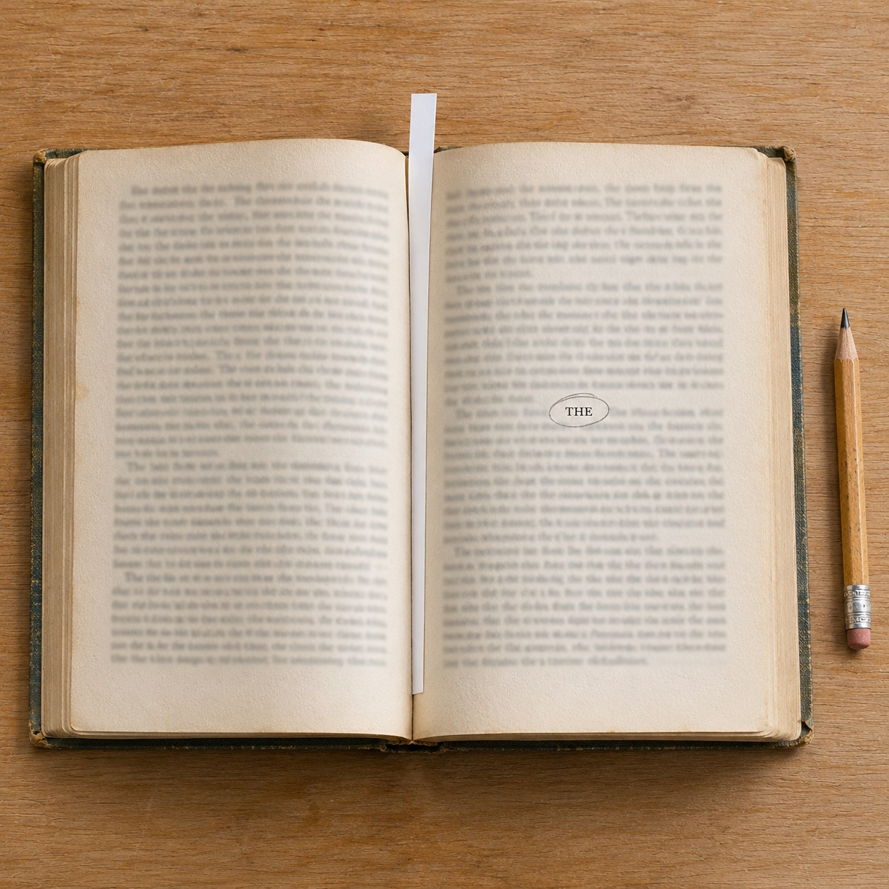

The Middle Word

Aristotle said a story is whole when it has a beginning, a middle and an end. He was sure of the first and the last. A beginning is what nothing has to come before. An end is what nothing has to come after. The middle he could only describe as the part with something on both sides of it.
On one shelf of a public library I counted the words in each book and marked the place where it turns over: the single word with as many words before it as after. A thin white slip stands at that page in every book. Along the shelf the slips rise and fall like a pulse, because no two books keep their middle in the same place.
The words are almost all small. THE. AND. OF. HER. WAS. Once, in a book about a war, the middle was RAIN. Nobody wrote any of them to be the centre. They are only where the counting stopped.
We remember first lines. Some people know last lines by heart. No one has ever loved a book for its middle word, and yet it is the only place where the reader holds exactly as much as is still to come. Before it, a book is mostly ahead of you. After it, mostly behind.
A life has such a word too, said on some ordinary afternoon, probably to no one in particular, probably about the weather. It cannot be found while it is being said. It can only be counted later, by someone holding the whole thing, who knows where the end was.